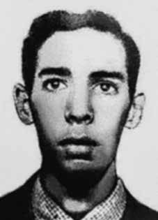

Antônio
Marcos
Pinto
de Oliveira
CIRCUNSTÂNCIAS DA MORTE
Antônio Marcos Pinto de Oliveira morreu em 29 de março de 1972, no episódio conhecido como Chacina de Quintino, operação policial realizada em uma casa que funcionava como aparelho da organização política VAR-Palmares.
A ação foi organizada por agentes do Destacamento de Operações e Informações do I Exército (DOI), contando com o apoio do Departamento de Ordem Política e Social do Estado da Guanabara (DOPS/GB) e da Polícia Militar. Após cercarem o local, os agentes entraram na residência e dispararam tiros. Junto com Antônio Marcos, foram mortas outras duas integrantes da VAR-Palmares: Lígia Maria Salgado Nóbrega e Maria Regina Lobo Leite de Figueiredo. James Allen Luz, que militava na mesma organização, encontrava-se no local, mas conseguiu escapar do cerco.
De acordo com a versão dos fatos divulgada à época pelos órgãos oficiais do Estado, Antônio Marcos teria morrido ao ser atingido por um tiro disparado após ter tentado reagir à ação dos agentes do Estado. Contudo, as investigações demonstram que não houve troca de tiros por parte dos militantes. Em entrevistas à Comissão Estadual da Verdade do Rio de Janeiro (CEV/RJ), os moradores de Quintino, que, na época, eram vizinhos da residência onde se passaram os fatos, relataram que a polícia já se encontrava no bairro desde o final da tarde de 29 de março, preparando a operação que aconteceu na noite do mesmo dia.
De acordo com o relato dos moradores que testemunharam os fatos, os barulhos dos disparos não vinham de dentro da casa onde estavam os militantes, mas do lado de fora, de onde partia a ação policial. Manifestação da equipe de perícia da Comissão Nacional da Verdade aponta que não havia nenhum vestígio de pólvora nos corpos das vítimas nem armas no local, o que reforça a hipótese de que não houve troca de tiros por parte dos militantes, tratando-se, portanto, de uma ação unilateral das forças repressivas com o objetivo de executar os militantes.
O corpo de Antônio Marcos deu entrada no Instituto Médico-Legal (IML) como desconhecido em 30 de março. Mesmo com o apoio de alguns setores da Igreja, a família só conseguiu retirar o corpo do IML onze dias após a morte de Antônio Marcos. Os restos mortais de Antônio Marcos Pinto de Oliveira foram enterrados no cemitério São Francisco Xavier, no Rio de Janeiro, em um caixão lacrado. Na ocasião, estiveram presentes policiais que ameaçaram a família, caso tentasse abrir o caixão ou denunciasse as circunstâncias da entrega do corpo.
Antônio Marcos Pinto de Oliveira died on March 29, 1972, in the episode known as Chacina de Quintino, a police operation carried out in a house that functioned as an apparatus for the political organization VAR-Palmares.
The action was organized by agents from the Operations and Information Detachment of the 1st Army (DOI), with the support of the Department of Political and Social Order of the State of Guanabara (DOPS/GB) and the Military Police. After surrounding the area, the agents entered the residence and fired shots. Along with Antônio Marcos, two other members of VAR-Palmares were killed: Lígia Maria Salgado Nóbrega and Maria Regina Lobo Leite de Figueiredo. James Allen Luz, who worked in the same organization, was there, but managed to escape the siege.
According to the version of events published at the time by official State bodies, Antônio Marcos died after being hit by a shot fired after trying to react to the action of State agents. However, investigations show that there was no exchange of fire by the militants. In interviews with the Rio de Janeiro State Truth Commission (CEV/RJ), the residents of Quintino, who, at the time, were neighbors of the residence where the events took place, reported that the police had already been in the neighborhood since the late afternoon of March 29, preparing the operation that took place on the evening of the same day.
According to the reports of residents who witnessed the events, the noise of the shots did not come from inside the house where the militants were, but from outside, where the police action started. A statement from the National Truth Commission's forensic team points out that there was no trace of gunpowder on the bodies of the victims nor any weapons at the scene, which reinforces the hypothesis that there was no exchange of fire by the militants, meaning that it was, therefore, a unilateral action by the repressive forces with the aim of executing the militants.
Antônio Marcos' body was admitted to the Legal Medical Institute (IML) as unknown on March 30. Even with the support of some sectors of the Church, the family only managed to remove the body from the IML eleven days after Antônio Marcos' death. The remains of Antônio Marcos Pinto de Oliveira were buried in the São Francisco Xavier cemetery, in Rio de Janeiro, in a sealed coffin. At the time, police officers were present and threatened the family if they tried to open the coffin or report the circumstances surrounding the delivery of the body.
Antônio Marcos Pinto de Oliveira murió el 29 de marzo de 1972, en el episodio conocido como Chacina de Quintino, un operativo policial realizado en una casa que funcionaba como aparato de la organización política VAR-Palmares.
La acción fue organizada por agentes del Destacamento de Operaciones e Información del 1º Ejército (DOI), con el apoyo del Departamento de Orden Político y Social del Estado de Guanabara (DOPS/GB) y la Policía Militar. Tras rodear la zona, los agentes ingresaron a la residencia y efectuaron disparos. Junto a Antônio Marcos fueron asesinados otros dos integrantes del VAR-Palmares: Lígia Maria Salgado Nóbrega y Maria Regina Lobo Leite de Figueiredo. Allí se encontraba James Allen Luz, quien trabajaba en la misma organización, pero logró escapar del asedio.
Según la versión de los hechos publicada en su momento por organismos oficiales del Estado, Antônio Marcos murió tras ser alcanzado por un disparo efectuado luego de intentar reaccionar ante la acción de agentes estatales. Sin embargo, las investigaciones muestran que no hubo ningún intercambio de disparos por parte de los militantes. En entrevistas con la Comisión de la Verdad del Estado de Río de Janeiro (CEV/RJ), los vecinos de Quintino, que en ese momento eran vecinos de la residencia donde ocurrieron los hechos, informaron que la policía ya estaba en el barrio desde la tarde del 29 de marzo, preparando el operativo que tuvo lugar la tarde del mismo día.
Según relatos de vecinos que presenciaron los hechos, el ruido de los disparos no provino del interior de la casa donde se encontraban los militantes, sino del exterior, donde se inició la acción policial. Un comunicado del equipo forense de la Comisión Nacional de la Verdad señala que no había rastros de pólvora en los cuerpos de las víctimas ni armas en el lugar, lo que refuerza la hipótesis de que no hubo intercambio de disparos por parte de los militantes, por lo que se trató de una acción unilateral de las fuerzas represivas con el objetivo de ejecutar a los militantes.
El cuerpo de Antônio Marcos fue ingresado en el Instituto Médico Legal (IML) como desconocido el 30 de marzo. Incluso con el apoyo de algunos sectores de la Iglesia, la familia sólo logró sacar el cuerpo del IML once días después de la muerte de Antônio Marcos. Los restos de Antônio Marcos Pinto de Oliveira fueron enterrados en el cementerio São Francisco Xavier, en Río de Janeiro, en un ataúd sellado. En ese momento, agentes de policía se encontraban presentes y amenazaron a la familia si intentaban abrir el ataúd o denunciar las circunstancias de la entrega del cuerpo.